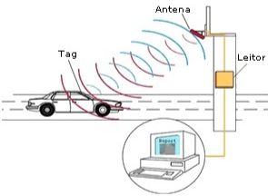

A história do RFID começa nas décadas de 1940 e 1950, com os primeiros desenvolvimentos em sistemas de identificação por rádio. No entanto, foi só nos anos 1960 que os primeiros protótipos funcionais de RFID foram criados.
Durante a Segunda Guerra Mundial, os países em conflito usavam o radar para alertar sobre a aproximação de aviões. O problema é que não havia como distinguir se era um inimigo ou não. Então, os alemães descobriram que ao girar seus aviões, quando voltavam à base, o sinal de rádio refletido era alterado, diferenciando da identificação dos aviões alemães. Este foi o primeiro sistema RFID passivo.
Disponível em:Em 1973, Charles Walton, um empreendedor da Califórnia, patenteou o transponder passivo usado para abrir portas sem uso de chave. Esse sistema consistia em etiquetas passivas que podiam ser lidas remotamente por um leitor. Esse foi o marco inicial para a tecnologia RFID. Ele era inserido dentro de cartões, e quando era validado pelo leitor, abria a porta.
Nos anos seguintes, os avanços na tecnologia de RFID foram gradualmente realizados. Foram desenvolvidos diferentes tipos de etiquetas, melhorias na eficiência de leitura e redução de custos. No entanto, foi a partir dos anos 1990 e 2000 que o RFID começou a ser adotado comercialmente em várias indústrias.
Uma das primeiras aplicações significativas do RFID foi na indústria de transporte e logística, onde foi utilizado para rastrear e gerenciar o estoque de mercadorias. Em seguida, o RFID se expandiu para outras áreas, como varejo, saúde, automotivo, agricultura e muito mais.
 Disponível em:Com o tempo, houve avanços na tecnologia de RFID, como a miniaturização dos componentes, o aumento da capacidade de armazenamento de dados nas etiquetas e melhorias na precisão e alcance de leitura. Além disso, os custos diminuíram, tornando o RFID mais acessível e amplamente adotado em diversos setores.
Atualmente, o RFID é uma tecnologia estabelecida e continua a evoluir, impulsionando a automação, a eficiência operacional e a rastreabilidade em várias indústrias ao redor do mundo.